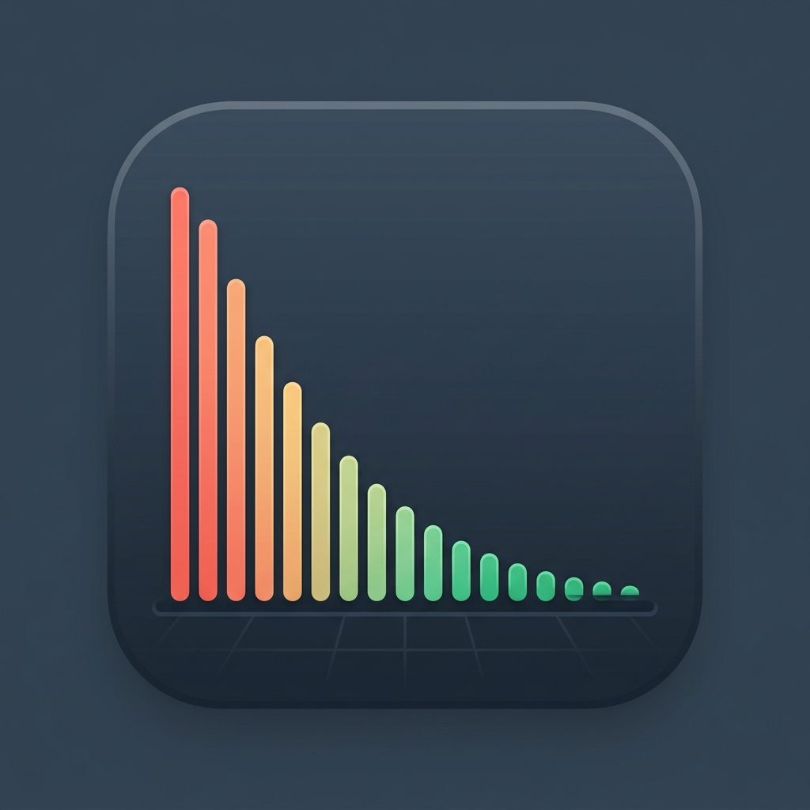

Mockup previews showing how the PWA launcher icon will render on mobile home screens. We have adjusted the weaning curve inside: the initial red bars are now significantly taller to emphasize the downward titration schedule.
The Refined Launcher Design
Option 2B-Inside-Brain (Taller Bars)
The Taller-Bars Brain Orbit
Recommended. The red vertical bars on the left are significantly taller and thicker, highlighting a clear downward weaning titration curve inside the brain silhouette. Wrapped in the planetary orbit ring.
SUD Toolkit
Reference Designs
Option 2B (Refined)
The Refined Brain Orbit
The human brain outline is larger, and the weaning graph inside shows a steep hyperbolic drop from medium height to near zero.
SUD Toolkit
Option 2B (Base)

Base Hyperbolic
The base hyperbolic weaning curve showing progressive dose reductions based on receptor occupancy, without any extra design elements.